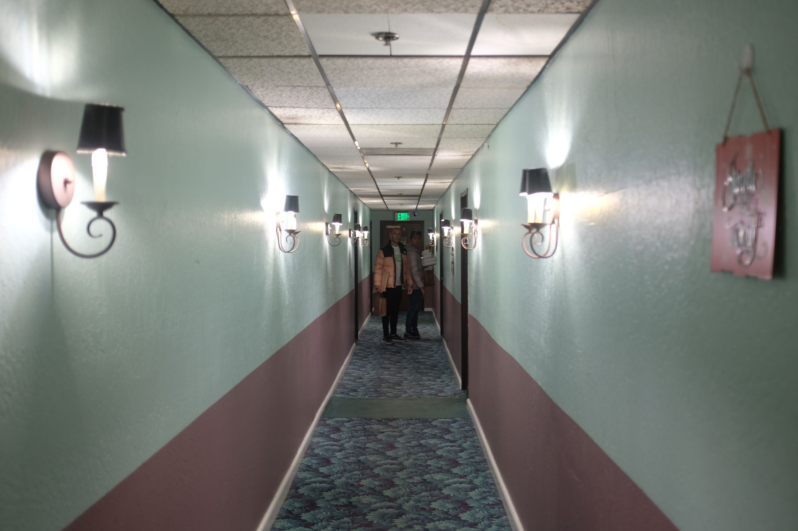
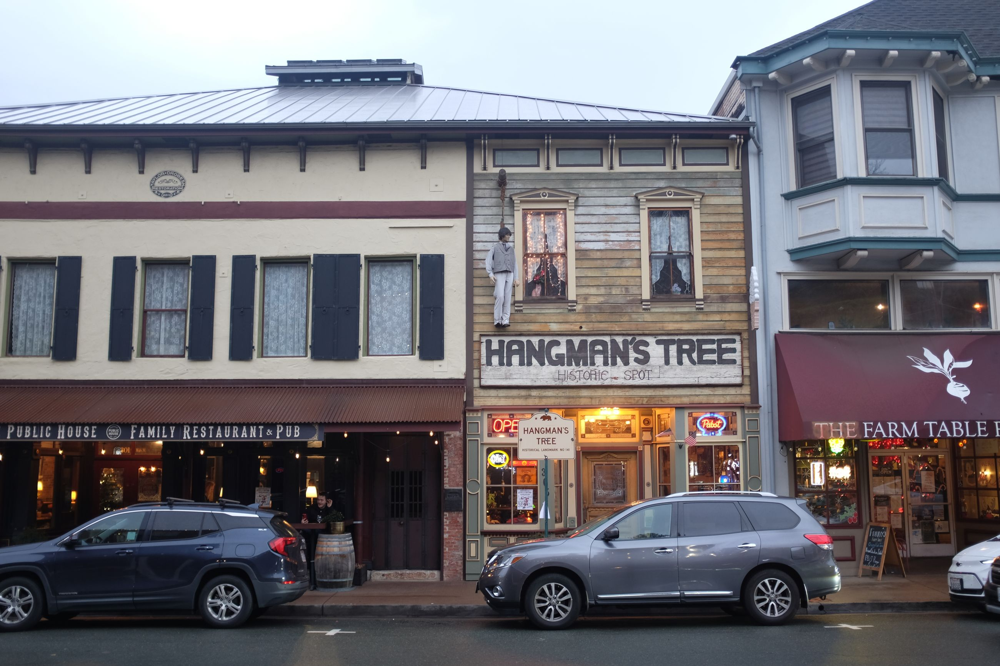
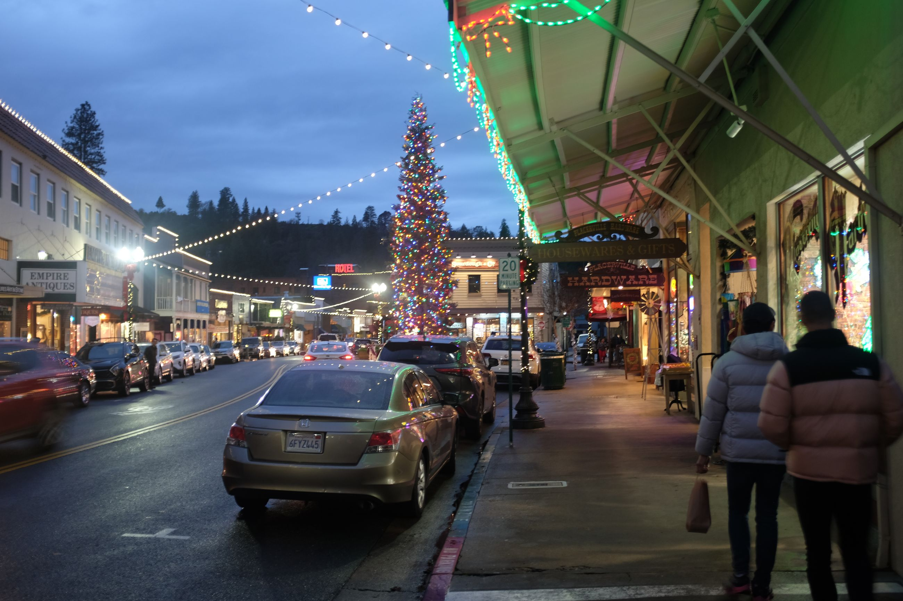

Rain starts falling as we pull into Placerville, named after placer mining -- the easiest but most crude way to mine for gold.
We check into the Cary Hotel which is a historic building that sits just at the entry of the high street. Inside is some antiquated green carpet and a small wooden booth where concierge sits. A lady with bright pink hair greets us and checks us in. You have two options to go up the three floors: either through the retrofitted lift, or the creaky stairs.
The rooms are dated and meant to give it an old Victorian feel. But a retrofitted sink-stove unit contrasts the oldness. The bedsheets are a strange floral, one you'd see at your grandmother's house. While creepy, the hotel has a lot of character.

Since the sun has set, we take a walk along the high street. By this point, there's nothing really new from other boomtowns; the same low-rise buildings shoulder-to-shoulder, each with its own business. The only difference is that these businesses are high-end: candle shops, fancier pubs, vintage shops, and a hardware store that has everything you need.
Another difference is that each building is memoralised with its history. This is denoted by an unassuming plaque near the door which tells of the historic use of the building. We walk past a shop that says "Hangtown" which was the old name of Placerville (an homage to its vigilante justice era of hanging wrongdoers). Apparently they used to do the hangings there.

We pop into a public house (pub) and have a really nice dinner. Probably one of the best of our trip -- Placerville Public House, check it out if you want.

Looks like the rain is coming down hard. Might affect our trip into Columa -- the site of Sutter Mill and gold discovery -- tomorrow.